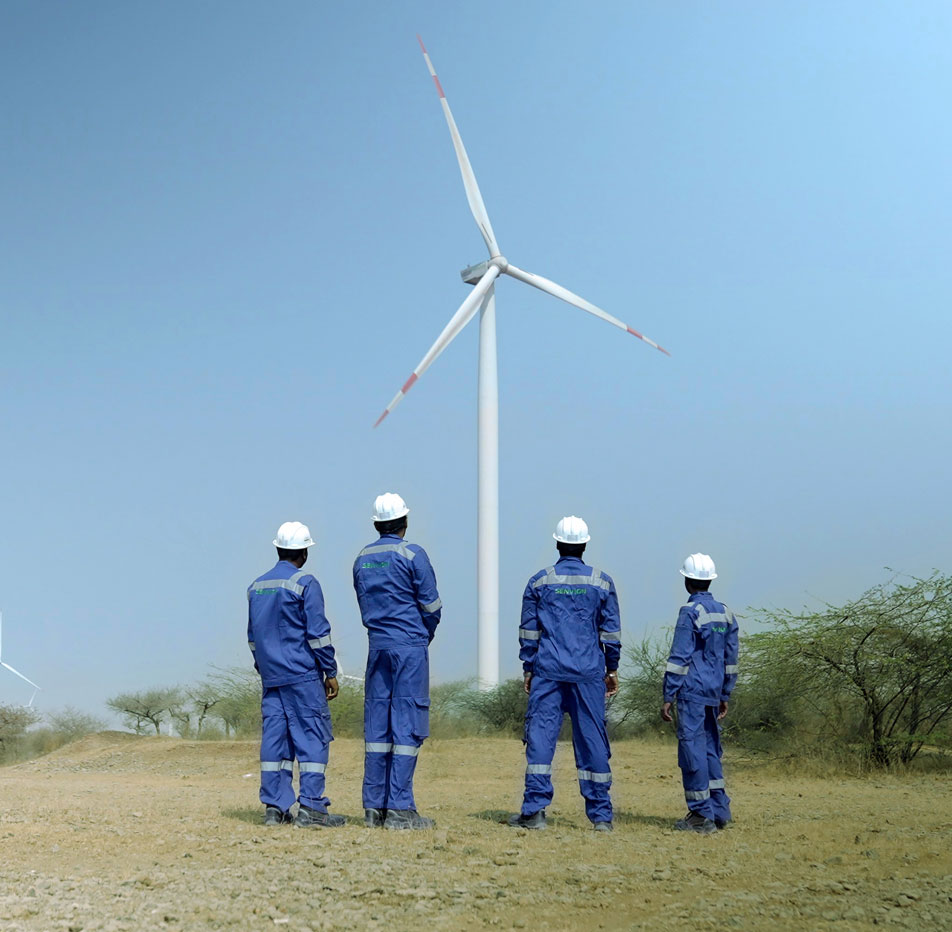
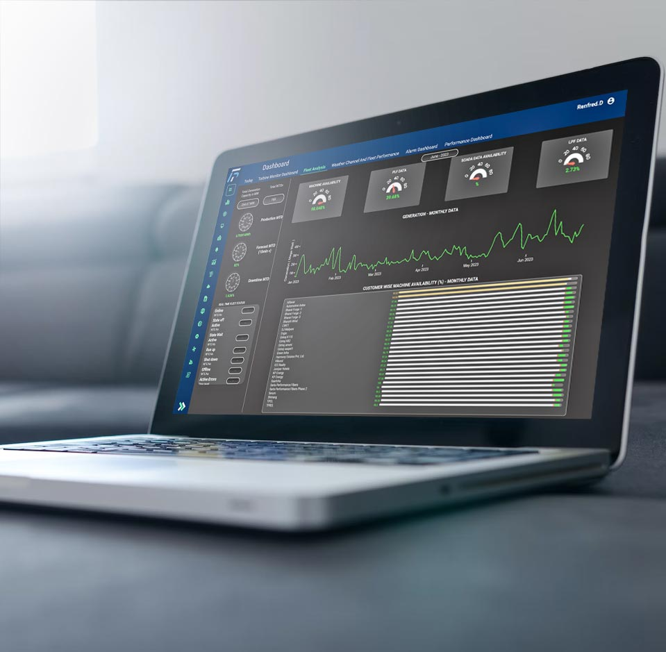

Operations And Maintenance
Senvion India has a highly efficient in-house Operation and Maintenance (O&M) team that is actively managing Wind Farm Power Projects in multiple Indian states. Our team serves a prestigious clientele, including the industry's leading Independent Power Producers (IPPs).
What we do
Senvion India takes pride in providing flexible services that are tailored to our customers' specific needs and expectations. We developed FleetPro, a cutting-edge digital platform that enables efficient monitoring and control of wind farm fleets. Our digitised platform ensures optimal operations for maximum productivity by focusing on performance and machine availability.
Operations and Maintenance · Experience and Capabilities · Service philosophy · Turbine Control Center (TCC) · Repair Solutions · QHSE Initiatives
🔧 Operations & Maintenance

O&M- Over a decade of expertise in O&M of wind turbines
- Comprehensive and customised contracts from 10 to 25 years
- Performance-driven approach maximising asset yield and ROI
- Genuine original spare parts with regional stock at every site
- Dedicated in-house maintenance team & craneless solutions
- Lost Production Factor tracked continuously against contract
📡 FleetPro®

SCADASenvion India's own proprietary SCADA system — a web-based human-machine interface for wind turbine process data acquisition, monitoring, remote control and data integration. No additional hardware installation or administration required.
- Data analytics & diagnostics tool
- Performance dashboards
- Diagnostics reports
- Historical performance analysis
🏭 Turbine Control Centre
- Dedicated TCC in Baramati for 24/7 asset monitoring
- In-house repair centre for electronic spare parts
- Dedicated blade technician team with manlifts for up-tower work
- ISO 45001 & ISO 14001 aligned QHSE: PTW, TBT, LOTO
- Safety-first culture with a clear goal: Zero Harm
Service Results
| Maintenance | Quantity | MW | Comment |
|---|---|---|---|
| Total combined capacity under service | 629 | 1600 | As of July 2026 |
| Service technicians | 300 | As of July 2026 | |
| Markets with service presence | 47 | 47 sites located in 5 states of India | |
| Lost Time Injuries Rate (LTIR) | 0 | As of July 2026 | |
| Lost Production Factor (LPF) | < 2 | As of July 2026 |
Services
Operations and Maintenance
Senvion India has a highly efficient in-house Operation and Maintenance (O&M) team that is actively managing Wind Farm Power Projects in multiple Indian states. Our team serves a prestigious clientele, including the industry's leading Independent Power Producers (IPPs).
Experience and Capabilities
- Over a Decade of Expertise: Senvion brings more than ten years of experience in the operation and maintenance (O&M) of wind turbines, backed by a team of highly skilled professionals dedicated to managing and optimising wind assets.
- Flexible Service Offerings: We provide both comprehensive and customised O&M services, tailored to customer needs, with contract durations ranging from 10 to 25 years.
- Performance-Driven Approach: Our O&M team is committed to maximising asset yield to ensure the best possible return on investment (ROI).
- Use of Original Spare Parts: We prioritise the use of genuine spare parts to maintain reliability and performance.
- Dedicated In-House Maintenance Team: Our internal team handles all aspects of maintenance, ensuring consistent quality and responsiveness.
- Innovative Craneless Solutions: We’ve developed craneless maintenance techniques to reduce costs and minimise right-of-way (ROW) challenges.
- Value-Added Services: We offer additional services aimed at enhancing asset performance and reliability.
Service philosophy
- Dedicated Asset Management: Each wind farm is supported by dedicated personnel who perform regular troubleshooting, maintenance, and inspections.
- Strategic Spare Parts Inventory: All sites are equipped with sufficient stock of original spare parts, supported by regional stores for rapid response.
- Continuous Improvement: We apply lessons learned through retrofit solutions to enhance safety and operational efficiency.
- 24/7 Monitoring: All assets are continuously monitored from our Turbine Control Centre (TCC) to ensure optimal performance.
- Maintenance Audits: Regular audits are conducted to assess and maintain the health of each asset.
Turbine Control Center (TCC)
- Senvion operates a dedicated Turbine Control Centre (TCC) in Baramati for 24/7 asset monitoring.
- Developed its own proprietary SCADA system – FleetPro®, designed for high-level data integration.
- FleetPro® offers a comprehensive solution for monitoring, remote control, and data management.
- Web-based platform that requires no additional hardware installation or administration.
Repair Solutions
- In-house repair centre in Baramati for electronic spare parts.
- Established rate contracts with OEM suppliers for high-quality repairs within defined timelines.
- Strong Standard Operating Procedures (SOPs) in place for supplier onboarding to ensure repair quality.
- Dedicated blade technician team, supported by engineering staff and manlifts for up-tower blade maintenance.
QHSE Initiatives
- Safety First Culture: At Senvion, safety is our highest priority. We foster a culture of safety with a clear goal: Zero Harm.
- ISO-Aligned Systems: Our processes align with ISO 45001 and ISO 14001 standards, ensuring structured risk assessments, safe work procedures, and continuous improvement. We strictly adhere to best practices such as Permit to Work (PTW), Toolbox Talks (TBT), and Lockout/Tagout (LOTO).
- Subcontractor Safety Oversight: We conduct regular safety audits of our subcontractors to ensure compliance and promote a shared safety culture.
- Training & Awareness: Safety campaigns, training sessions, and mock drills are regularly organised to reinforce safety awareness across all teams.
FleetPro®
Senvion India has designed its own proprietary SCADA System (FleetPro®) to deliver high level of data integration. It has full solution with a cascade of possibilities in monitoring, remote control, and data integration. It is a human-machine interface in the wind turbine process data acquisition i.e., processing data that has been measured for various analysis, reports. This web-based product function does not require any installation or administration of additional hardware.
Data Analytics and Diagnostics Tool
FleetPro®, Senvion India's SCADA platform, enables users to operate and monitor turbines remotely. With a comprehensive and intuitive AI and machine learning solution for wind turbine analysis, this powerful analytics platform empowers users to make informed decisions and maximise renewable energy generation. The platform seamlessly integrates multiple renewable asset platforms through various protocols, employing cutting-edge software technologies to simplify security and service for our customers. This platform's scalable architecture makes adding features easy.
What we do
Fleetpro is a cutting-edge Software-as-a-Service (SaaS) solution that provides intelligent asset management capabilities to improve renewable asset performance and health. This comprehensive platform enables the seamless integration of multiple renewable asset platforms and protocols. Fleetpro's comprehensive toolkit of analytical Key Performance Indicators (KPIs) and advanced algorithms enables asset managers to make informed decisions and optimise asset performance. Fleetpro, which is built on a highly scalable architecture, ensures efficient throughput while performing complex analytical tasks with precision and quality.
Along with the Asset Management software the site team is backed by experienced In house expert Service professionals in Mumbai and Engineering team in Bengaluru to support the O & M operations in delivering best in class and Quality Services to customers.
Contact us — info@senvion.in
FleetPro® SCADA — features, dashboards and diagnostics.